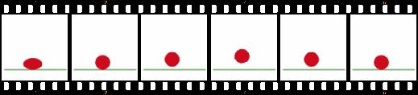

This is the basis for creating animations.
Keyframes define how the animation looks at each stage.
The @keyframes property is used for determining what should change at what point in a given animation. For example, in 10% of the animation we will start to change the background of a given element, in 25% of the animation duration we will change its padding and in 50% we will rotate it.
In the example, the percentages do not have to be round numbers. We can determine the moment of animation more precisely, e.g. as 10.001%.
@keyframes myAnimation {
10% {transform: rotate(45deg);
}Additionally, instead of 0% or 100%, keywords from , to can be used.
@keyframes loading {
from {transform: rotate(0deg);
}transform: rotate(360deg);Very often we will animate many properties of an element at once.
@keyframes superAnimation {
50% {border-radius: 10px;
padding: 20px;
}width: 200px;
border-radius: 20px;
}background: red;
}